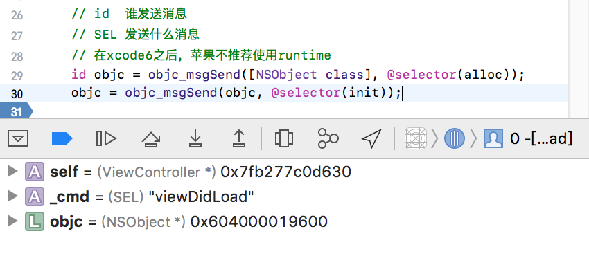
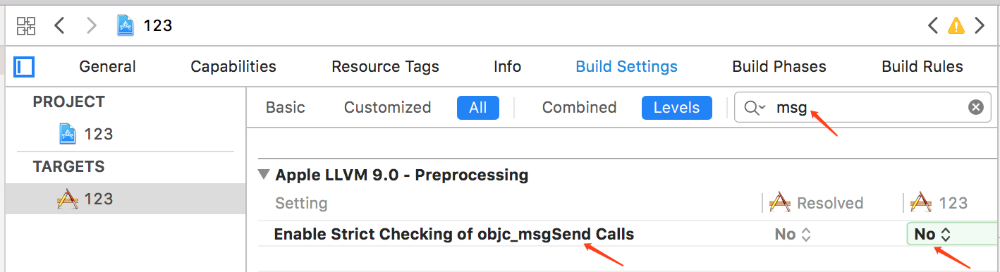
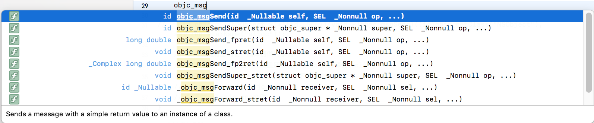
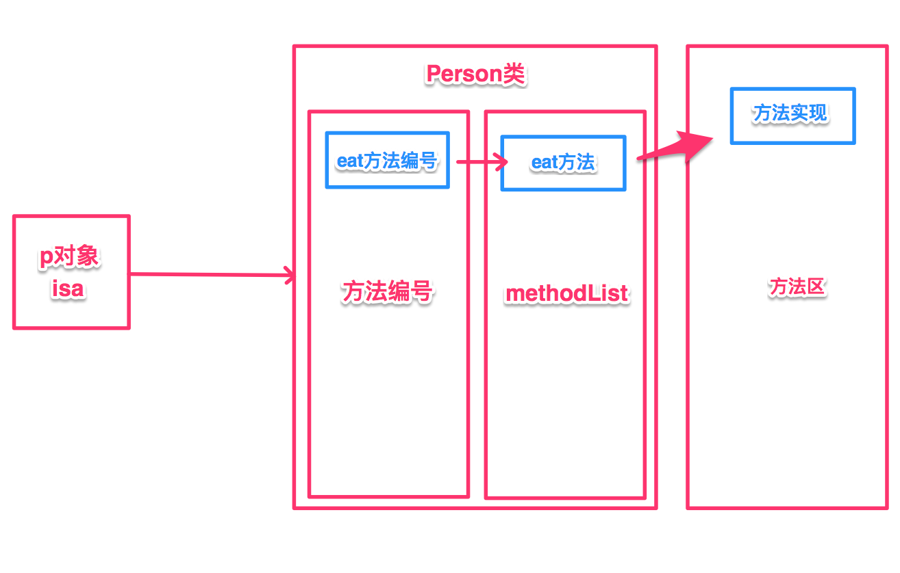
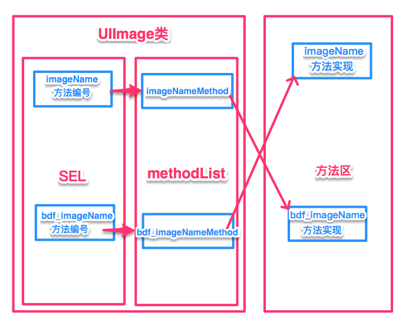

Runtime
一.runtime简介
- runtime简称运行时，OC就是
运行时机制，也就是在运行时候的一些机制，其中最主要的是消息机制。 - 对于C语言，
函数的调用在编译时会决定调用哪个函数。 - 对于OC的函数，属于
动态调用过程，在编译的时候不能决定真正调用哪个函数，只有在真正运行的时候才会根据函数的名称找到对应的函数来调用。 - 事实证明：
① 在编译阶段：OC可以调用任何函数，即使这个函数并未实现，只要声明过就不会报错。
② 在编译阶段：C语言调用
未实现的函数就会报错。
runtime的五个功能
1.发送消息 2.交换方法 3.动态添加方法 4.给分类添加属性 5.字典转模型
- 方法调用的本质，就是让对象发送消息。
- objc_msgSend,只有对象才能发送消息，因此以objc开头。
- 使用
消息机制前提，必须导入#import - 消息机制简单使用。
- clang-rewrite-objc main.m查看最终生成代码。
二.Runtime(消息机制)
消息机制是OC中是最主要的机制，任何方法的调用本质都是发送消息，用runtime发送消息，OC底层通过runtime来实现。
验证:
是否真的是转换为消息机制
第一步：cd进入到该文件夹
第二步：在终端执行clang -rewrite-objc 文件名 命令
第三步：该命令成功后就会生成一个.cpp的文件。
allisondeMacBook-Pro:123 allison$ clang -x objective-c -rewrite-objc -isysroot /Applications/Xcode.app/Contents/Developer/Platforms/iPhoneSimulator.platform/Developer/SDKs/iPhoneSimulator.sdk ViewController.m
clang: warning: using sysroot for 'iPhoneSimulator' but targeting 'MacOSX' [-Wincompatible-sysroot]
/var/folders/nm/4974_cj15s5gyjfg8wj077qm0000gn/T/ViewController-78b550.mi:12798:188: warning:
'kCFCalendarUnitWeek' is deprecated: first deprecated in macOS 10.10 - Use
kCFCalendarUnitWeekOfYear or kCFCalendarUnitWeekOfMonth instead
[-Wdeprecated-declarations]
...or NSCalendarUnitWeekOfYear, depending on which you mean"))) = kCFCalend...
^
/var/folders/nm/4974_cj15s5gyjfg8wj077qm0000gn/T/ViewController-78b550.mi:5147:2: note:
'kCFCalendarUnitWeek' has been explicitly marked deprecated here
kCFCalendarUnitWeek __attribute__((availability(macos,introduced=10.4,d...
^
1 warning generated.
查看ViewController.cpp文件，我们发现有64871行代码，查找viewDidLoad方法，我们看.cpp文件中viewDdiload方法中生成的代码：
// @implementation ViewController
static void _I_ViewController_viewDidLoad(ViewController * self, SEL _cmd) {
((void (*)(__rw_objc_super *, SEL))(void *)objc_msgSendSuper)((__rw_objc_super){(id)self, (id)class_getSuperclass(objc_getClass("ViewController"))}, sel_registerName("viewDidLoad"));
id objc = ((NSObject *(*)(id, SEL))(void *)objc_msgSend)((id)objc_getClass("NSObject"), sel_registerName("alloc"));
objc = ((id (*)(id, SEL))(void *)objc_msgSend)((id)objc, sel_registerName("init"));
}
我们ViewController.m写的代码
- (void)viewDidLoad {
[super viewDidLoad];
// Do any additional setup after loading the view, typically from a nib.
id objc = [NSObject alloc];
objc = [objc init];
}
例子：运用运行时去创建一个NSObject对象。(我们可以参考ViewController.cpp类里面的viewDidLoad方法)
id objc = ((NSObject *(*)(id, SEL))(void *)objc_msgSend)((id)objc_getClass("NSObject"), sel_registerName("alloc"));
objc = ((id (*)(id, SEL))(void *)objc_msgSend)((id)objc, sel_registerName("init"));
上面这个是最底层的，下面我们可以用苹果封装好的方法，效果是一样的：
id objc = objc_msgSend([NSObject class], @selector(alloc));
objc = objc_msgSend(objc, @selector(init));
这里，从控制台我们可以发现，我们已经分配内存，并且没有错误。

Tips1
本来想在main函数中试验，但是在main函数中的时候，使用 allison$ clang -rewrite-objc main.m命令的时候总是报如下错误，所以最后在ViewController中生成cpp文件成功。（暂不清楚原因，还请各位知道的留言指正）
allisondeMacBook-Pro:Clang allison$ clang -rewrite-objc main.m
main.m:9:9: fatal error: 'UIKit/UIKit.h' file not found
#import <UIKit/UIKit.h>
^~~~~~~~~~~~~~~
1 error generated.
allisondeMacBook-Pro:
Tips2
我们用objc_msgSend函数的时候，可能没有提示，这是因为在xcode6之后，苹果不推荐使用runtime，因为苹果不想让开发者了解底层的实现，只想让开发者直接使用API即可。但是这里，我们可以将严格检测消息机制这个选项关闭，使用objc_msgSend函数的时候便会提示了，设置如下图所示：


三. Runtime(消息机制调用多个参数)
开发中什么时候用runtime？
1.可以帮我们调用私有的方法。（例子：同事封装的一个比较好的类，该类中都是私有方法，我们想使用该方法，一般是不会直接修改.h文件，这个时候可以使用runtime来实现）。
2.苹果系统API中，如果发现某个私有的API比较好用，如果我们想使用，可以通过objc_msgSend来调用私有的api。
四.方法调用流程
调用set方法对象方法：类对象的方法列表；类方法：元类中方法列表。
- 内存五大区：
- 1.栈：不需要手动管理内存，自动管理
- 2.堆：需要手动管理内存，手动释放
- 3.静态区
- 4.常量区
- 5.方法区
方法调用流程：

1.通过isa指针去对应的类中查找。 2.注册方法编号 3.根据方法编号去查找对应的方法。 4.找到只是最终函数实现地址，根据地址去方法区调用对应函数。
五.Runtime(交换方法&自定义UIImage)
开发中什么时候使用runtime(交换方法)？ 需求1：每次UIImage加载图片，返回是否加载成功！
方法1.：自定义UIImage类。
弊端：①.每次使用都需要导入 ②.老项目/大项目大量使用UIImage，替换不易。
方法2： 给UIImage添加分类。
弊端：①.在分类中方最好不要重写系统方法，一旦重写，把系统方法实现就给覆盖了。②分类中不能调用super方法。
方法3：使用runtime(交换方法)来实现。

(1)给系统的方法添加分类。
(2)自己实现一个带有扩展功能的方法,如：bdf_imageNamed。
(3)交换imageNamed和bdf_imageNamed方法。
主要代码：
// 获取系统方法
// Class _Nullable __unsafe_unretained cls 获取那个类的方法
// SEL _Nonnull name：获取那个方法
Method imageNameMethod = class_getClassMethod(self, @selector(selectedImage:));
// 获取自定义方法
Method bdf_imageNameMethod = class_getClassMethod(self, @selector(bdf_selectedImage:));
// 交换方法
method_exchangeImplementations(imageNameMethod, bdf_imageNameMethod);
六.Runtime(动态添加方法)
起源：面试题中，问有没有使用过performSelector?
self performSelector:<#(SEL)#>
答：动态添加方法的时候使用过！
这里请自行查阅runtime官方文档进行了解。目前没有get到Runtime动态添加方法方法的用处~ 😂
七.Runtime(动态添加属性)
开发中什么时候需要动态添加属性？
场景1：在分类中添加属性，通过objc_setAssociatedObject方法添加属性。
场景2：给系统的类添加属性的时候，可以使用runtime动态添加属性方法。
如：
- (void)setName:(NSString *)name {
// id _Nonnull object 给那个对象添加属性
// const void * _Nonnull key 属性名称
// id _Nullable value 属性值
// objc_AssociationPolicy policy 保存策略
objc_setAssociatedObject(self, @"name", name, OBJC_ASSOCIATION_RETAIN_NONATOMIC);
}
- (NSString *)name {
return objc_getAssociatedObject(self, @"name");
}